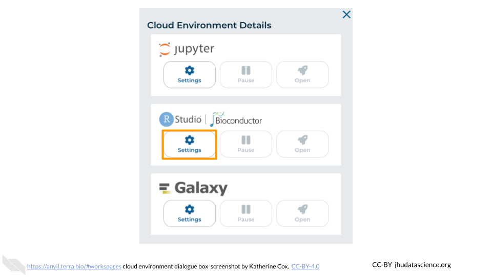
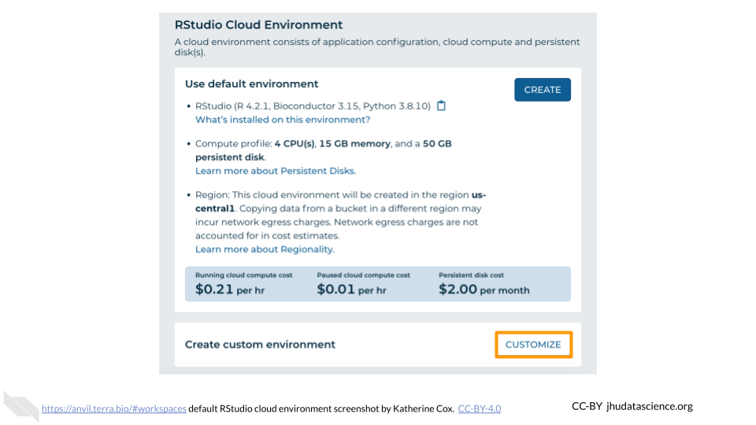
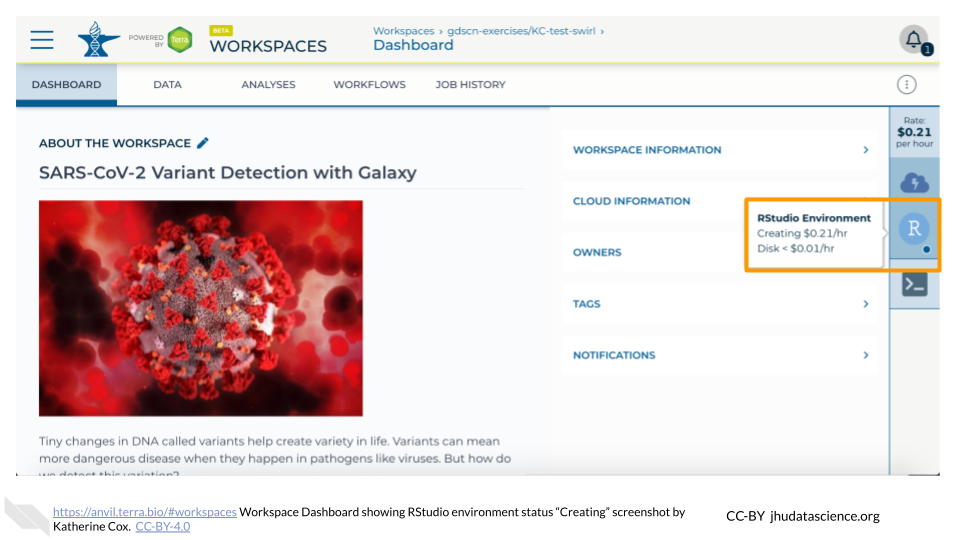
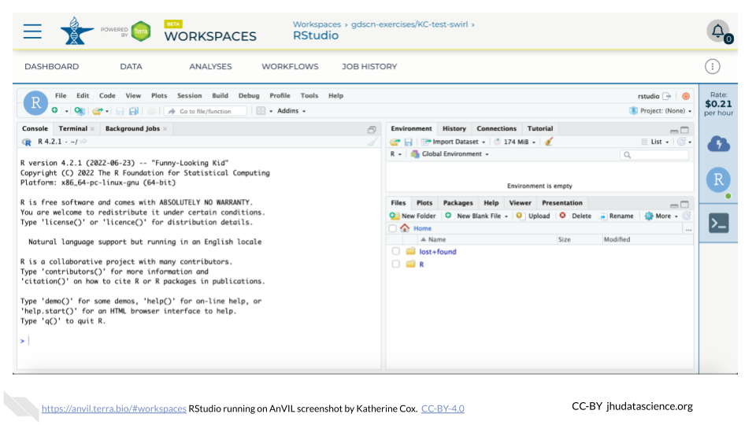

Chapter 7 Using programming platforms on AnVIL
Modules about opening, touring, and closing AnVIL platforms
7.1 Video overview on using Jupyter Notebooks
Here is a video tutorial that describes the basics of using Jupyter Notebook on AnVIL.
7.1.1 Objectives
- Start compute for your Jupyter environment
- Create notebook to perform analysis
- Stop compute to minimize expenses
7.1.2 Slides
The slides for this tutorial are are located here.
7.2 Video overview on using Galaxy
Here is a video tutorial that describes the basics of using Galaxy on AnVIL.
7.2.1 Objectives
- Start compute for your Galaxy on AnVIL
- Run tool to quality control sequencing reads
- Stop compute to minimize expenses
7.2.2 Slides
The slides for this tutorial are are located here.
7.3 Starting Galaxy
Note that, in order to use Galaxy, you must have access to a Terra Workspace with permission to compute (i.e. you must be a “Writer” or “Owner” of the Workspace).
Open your Workspace, and click on the “NOTEBOOKS” tab. Next, click on “Create a Cloud Environment for Galaxy”. You should see a popup window on the right side of the screen. Click on “NEXT” and “CREATE” to keep all settings as-is. This will take 8-10 minutes. When it is done, click “LAUNCH GALAXY”.

7.4 Navigating Galaxy
Notice the three main sections.
Tools - These are all of the bioinformatics tool packages available for you to use.
The Main Dashboard - This contains flash messages and posts when you first open Galaxy, but when we are using data this is the main interface area.
History - When you start a project you will be able to see all of the documents in the project in the history. Now be aware, this can become very busy. Also the naming that Galaxy uses is not very intuitive, so you must make sure that you label your files with something that makes sense to you.

On the welcome page, there are links to tutorials. You may try these out on your own. If you want to try a new analysis this is a good place to start.
7.5 Deleting Galaxy
Once you are done with your activity, you’ll need to shut down your Galaxy cloud environment. This frees up the cloud resources for others and minimizes computing cost. The following steps will delete your work, so make sure you are completely finished at this point. Otherwise, you will have to repeat your work from the previous steps.
Return to AnVIL, and find the Galaxy logo that shows your cloud environment is running. Click on this logo:

Next, click on “DELETE ENVIRONMENT OPTIONS”:

Finally, select “Delete everything, including persistent disk”. Make sure you are done with the activity and then click “DELETE”.

7.6 Video overview on using RStudio
Here is a video tutorial that describes the basics of using RStudio on AnVIL.
7.6.1 Objectives
- Start compute for your RStudio environment
- Tour RStudio on AnVIL
- Stop compute to minimize expenses
7.6.2 Slides
The slides for this tutorial are are located here.
7.7 Launching RStudio
AnVIL is very versatile and can scale up to use very powerful cloud computers. It’s very important that you select a cloud computing environment appropriate to your needs to avoid runaway costs. If you are uncertain, start with the default settings; it is fairly easy to increase your compute resources later, if needed, but harder to scale down.
Note that, in order to use RStudio, you must have access to a Terra Workspace with permission to compute (i.e. you must be a “Writer” or “Owner” of the Workspace).
Open Terra - use a web browser to go to
anvil.terra.bioIn the drop-down menu on the left, navigate to “Workspaces”. Click the triple bar in the top left corner to access the menu. Click “Workspaces”.

Click on the name of your Workspace. You should be routed to a link that looks like:
https://anvil.terra.bio/#workspaces/<billing-project>/<workspace-name>.Click on the cloud icon on the far right to access your Cloud Environment options.

In the dialogue box, click the “Settings” button under RStudio

You will see some details about the default RStudio cloud environment, and a list of costs because it costs a small amount of money to use cloud computing.

If you are uncertain about what you need, the default configuration is a reasonable, cost-conservative choice. It is fairly easy to increase your compute resources later, if needed, but harder to scale down. Click the “Create” button.

Otherwise, click “CUSTOMIZE” to modify the environment for your needs.

The dialogue box will close and you will be returned to your Workspace. You can see the status of your cloud environment by hovering over the RStudio logo. It will take a few minutes for Terra to request computers and install software.

When your environment is ready, its status will change to “Running”. Click on the RStudio logo to open a new dialogue box that will let you launch RStudio.

Click the launch icon to open RStudio. This is also where you can pause, modify, or delete your environment when needed.

You should now see the RStudio interface with information about the version printed to the console.

7.8 Touring RStudio
Next, we will be using RStudio and the package Glimma to create interactive plots. See this vignette for more information.
The Bioconductor team has created a very useful package to programmatically interact with Terra and Google Cloud. Install the
AnVILpackage. It will make some steps easier as we go along.
You can now quickly install precompiled binaries using the AnVIL package’s
install()function. We will use it to install theGlimmapackage and theairwaypackage. Theairwaypackage contains aSummarizedExperimentdata class. This data describes an RNA-Seq experiment on four human airway smooth muscle cell lines treated with dexamethasone.
{Note: for some of the packages, you will have to install packaged from the CRAN repository, using the install.packages() function. The examples will show you which install method to use.}
<img src="07-using_platforms_modules_files/figure-html//1BLTCaogA04bbeSD1tR1Wt-mVceQA6FHXa8FmFzIARrg_g11f12bc99af_0_56.png" title="Screenshot of the RStudio environment interface. Code has been typed in the console and is highlighted." alt="Screenshot of the RStudio environment interface. Code has been typed in the console and is highlighted." width="480" />Load the example data.

The multidimensional scaling (MDS) plot is frequently used to explore differences in samples. When this data is MDS transformed, the first two dimensions explain the greatest variance between samples, and the amount of variance decreases monotonically with increasing dimension. The following code will launch a new window where you can interact with the MDS plot.

Change the
colour_bysetting to “groups” so you can easily distinguish between groups. In this data, the “group” is the treatment.
You can download the interactive html file by clicking on “Save As”.

You can also download plots and other files created directly in RStudio. To download the following plot, click on “Export” and save in your preferred format to the default directory. This saves the file in your cloud environment.

You should see the plot in the “Files” pane.

Select this file and click “More” > “Export”

Select “Download” to save the file to your local machine.

7.9 Pausing RStudio
The upper right corner reminds you that you are accruing cloud computing costs.

You should minimize charges when you are not performing an analysis. You can do this by clicking on “Stop cloud environment”. This will release the CPU and memory resources for other people to use. Note that your work will be saved in the environment and continue to accrue a very small cost. This work will be lost if the cloud environment gets deleted. If there is anything you would like to save permanently, it’s a good idea to copy it from your compute environment to another location, such as the Workspace bucket, GitHub, or your local machine, depending on your needs.

7.10 Deleting RStudio
Stopping your cloud environment only pauses your work. When you are ready to delete the cloud environment, click on the gear icon in the upper right corner to “Update cloud environment”.

Click on “Delete Environment Options”.

If you are certain that you do not need the data and configuration on your disk, you should select “Delete everything, including persistent disk”. If there is anything you would like to save, open the compute environment and copy the file(s) from your compute environment to another location, such as the Workspace bucket, GitHub, or your local machine, depending on your needs.

Select “DELETE”.